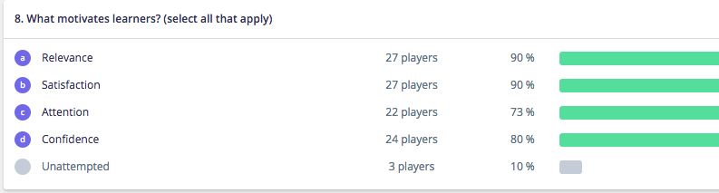

Answers and rationales for the Sim Week 2018 Trivia Quiz
Question Eight: What motivates learners? (select all that apply)

Possible answers:
Relevance
Satisfaction
Attention
Confidence
correct answer: All of the choices.
Rationale:
ARCS is a model that instructional designers and educators can use to design learning activities that motivate learners. ARCS stands for:
A: Attention
R: Relevance
C: Confidence
S: Satisfaction
Attention
To capture and maintain the student's attention you can use various methods such as:
Humor
Conflict
Real-world examples
Requiring hands-on participation
Alternating presentation methods (mixing it up)
Relevance
For material to motivate students, it must be relevant. Keller suggests the following methods to foster relevance:
Show them the direct connection between the skills and problem solving
Build on and connect to previous experience
Model the application of the skill
Give students a choice in how to learn the skill
Show how the skill can be used later (future usefulness)
Confidence
Students must believe in themselves and know that they can accomplish the goals that they have set. Learning activities can improve student's self confidence when they design activities to:
Help the student grow and progress.
Clearly delineate objectives and expected outcomes of activities.
Give students effective, timely, constructive feedback.
Provide learners with some level of control over the process.
Satisfaction
Motivation and satisfaction are linked in the process--for successful learning, students should feel success in their achievements and progression.
Praise and recognition of their achievements.
Ways to immediately apply the skills and materials that they are learning, whether through real world application or problem solving. This reinforces that the time and effort they are expending is justified.